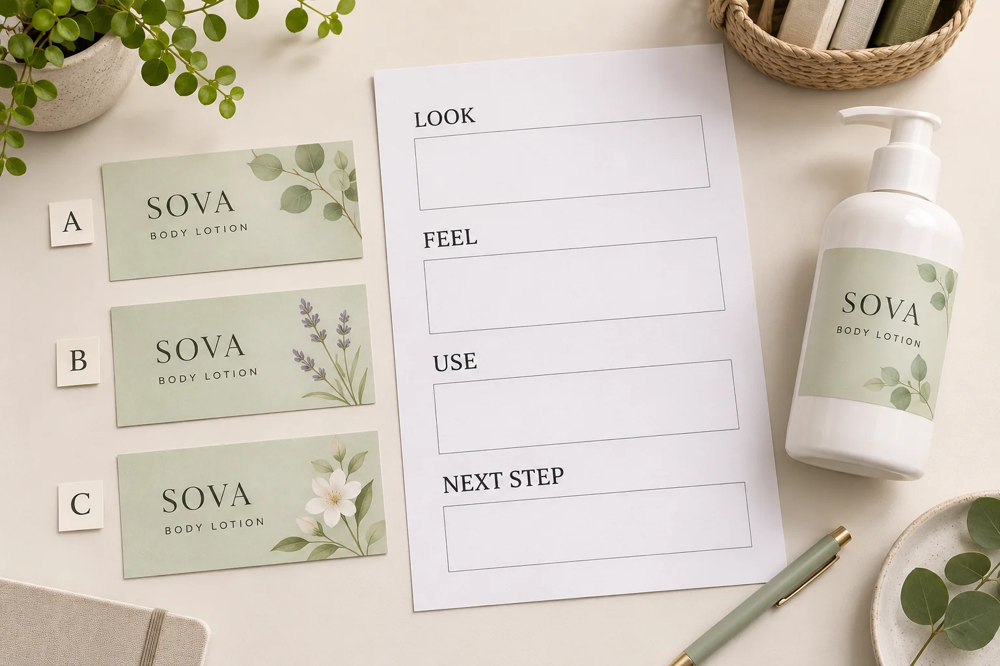

Name the layer instead of repeating the appearance
Ask the printer whether the proposal uses a matte overlaminating film, an overprint varnish or another construction. Obtain the relevant reference for the base stock, print and finish together. If the quotation uses an internal shorthand, have its meaning recorded.
ACTEGA's pressure-sensitive label example identifies matte and gloss overprint varnishes within a particular print construction. It illustrates a coating route. It does not establish a resistance level for every product called matte varnish.
Sicol's label-lamination product list separates gloss, matte and velvety-touch film references. This illustrates why the finish should have a product identity. Its catalog does not establish the resistance of your printed label or confirm that YT offers those grades.
Describe what the finished pack must encounter
Write down the relevant handling: dry shelf display, repeated handling, contact with water or the actual cosmetic product, packing and transportation. Include the bottle surface and whether the container flexes during use.
Ask the production supplier which sample and evaluation are appropriate for those conditions. Do not assume that a visually similar matte finish has the same compatibility with the print beneath it. Equally, do not declare every laminate superior to every varnish without identifying the constructions and requirements.
The waterproof material guide covers the broader stock discussion. A finish decision concerns the proposed printed construction; it does not replace adhesive selection or approval of the bottle surface.
Compare the appearance on a relevant sample
Use the intended artwork, or identify differences when the supplied sample comes from another design. View the samples under consistent conditions and on the relevant container where practical. Note whether the differences concern reflection, color impression, texture or fine detail.
A soft-looking photograph cannot establish a tactile property. A description such as soft touch also needs its own defined product reference; it should not be treated as a synonym for every matte film or coating.
Keep an accepted sample ID with the artwork. If the printer substitutes the finish later, ask which approvals need reviewing. A shared matte description does not establish that the pack remains visually or functionally equivalent.
Our cosmetic color proofing guide explains why the stock, finish, container and viewing conditions belong in the appearance discussion. Use that reference alongside the finish specification rather than asking a screen proof to settle the physical surface.
Compare gloss, standard matte and soft touch as separate choices
For the buyer asking about glossy, matte and soft-touch velvet lamination, separate the look from the feel. Gloss is an appearance direction to compare on the printed design. A standard matte sample addresses a lower-glare appearance. A proposed soft-touch construction adds a tactile requirement that needs a physical reference. A screen image cannot settle whether that feel is worth choosing.
Fedrigoni describes its Soft Touch product as a velvety polypropylene laminate for labels, including cosmetic and personal-care applications. That identifies one manufacturer's product, not a universal definition, a resistance rating or confirmation that YT supplies that grade. Ask the printer what its actual soft-touch proposal contains and what representative sample can be obtained.
Use this editorial comparison with the same artwork, base construction and container where practical. Record any differences that prevent a direct comparison.
| Requirement | Input to obtain | Choice or hold |
|---|---|---|
| Look | Gloss and matte printed references under the same viewing conditions. | Choose the reflection and legibility the brand accepts; a finish name does not approve the artwork. |
| Feel | Identified standard-matte and proposed soft-touch physical samples. | Consider soft touch when its actual feel matters to the brief. Keep that decision open if only photographs are available. |
| Use and supply | Expected handling, later coding, sample scope, quantity and current quotation. | Compare supported constructions and remaining work. Neither tactile preference nor a higher price establishes better resistance. |

First agree the intended look. Next compare the physical feel, then obtain the handling and later-operation response for the preferred construction. Keep the chosen sample ID with the quote. A hypothetical dry presentation pack may suit an accepted standard matte; a pack whose brief genuinely includes a particular hand feel may justify investigating a named soft-touch proposal. Hold either release if the proposed surface or required sample remains unidentified. For a separate handling concern, use the fingerprint appearance guide or dry scuff review; this table supplies no performance test or universal threshold.
Keep later batch coding in the conversation
If another party adds a batch code or date after label production, identify the coding method and surface requirements before choosing the final protection. Ask the operator and supplier to review the actual combination.
Avoid both blanket claims: that a laminate can never accept later printing, or that any matte varnish is automatically printable. The relevant finish, coding technology and consumable need confirming. An empty rectangle on the artwork does not establish that ink will adhere there.
Use the separate batch-code panel guide for that operator handoff. This article chooses the finish construction; the coding review establishes how the later mark will be produced on it.
Give the two proposals the same review questions
Use a short comparison record before deciding which quotation meets the brief:
| Field | What to record for each proposal |
|---|---|
| Finish identity | Film or coating, named reference and relevant specification |
| Base construction | Stock, print system and other layers included |
| Appearance | Accepted sample ID, artwork differences and viewing conditions |
| Handling | Intended contacts and the agreed sample evaluation |
| Later operations | Coding, application or other receiving-party requirements |
| Commercial scope | Quantities by design, sample scope, preparation and delivery format |
| Release | Reviewer, accepted conditions and unresolved difference |
Ask the supplier to explain a necessary difference instead of hiding it to make the prices look comparable. Where an important input is unknown, resolve it with the responsible operator or brand reviewer. A cheaper quote for a different outcome is a different proposal.
There is no universal thickness, rub score, turnaround time or cost difference in this worksheet. Those values need an actual product specification, agreed evaluation or written offer.
Allow either route to win under the right conditions
Consider a hypothetical dry presentation pack with an accepted coated sample and no unresolved handling requirement. A suitable coating proposal may meet the objective without adding a film layer simply for its name.
Now consider a regularly handled bottle for which a specific laminated construction has the required appearance and relevant evaluation evidence. The buyer has a reason to compare that proposal seriously. The reason is the identified result under the intended conditions, not a universal rule that laminate is always premium.
If neither sample represents the required use, the next decision is which focused sample to obtain. Ordering the full run does not remove the uncertainty.
Send the finish comparison with the label brief
For custom cosmetic labels, provide the bottle, artwork, label size and quantity per design. State the intended look, whether a particular feel is required, the proposed film or coating, expected handling and later coding. Ask which construction and physical sample can be proposed for those conditions. The form prepares a message; send artwork, sample photographs and supporting records separately by email or WhatsApp.
Prepare a finish sample inquiry